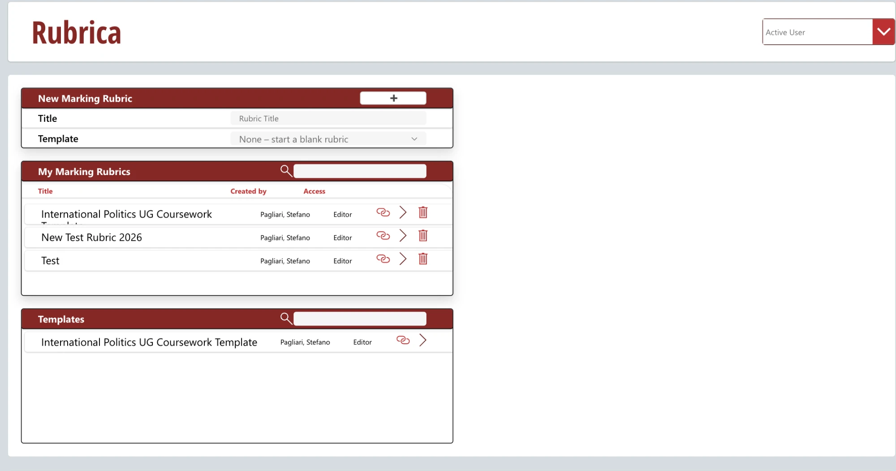

Rubrica – User Guide
Rubrica helps you mark student work against a marking rubric and turn your marking into clear, consistent written feedback. You pick a level for each criterion, add comments (or reuse saved phrases), and Rubrica writes up the feedback for you, ready to copy or download as a PDF.
This guide covers everything you can do in the app, in the order you are likely to need it.
Key ideas
| Term | Meaning |
|---|---|
| Rubric | A marking scheme for one assessment, for example International Politics UG Coursework. |
| Block | One row of a rubric: usually a criterion such as Argument or Referencing, with its levels. |
| Section | A heading block that groups the blocks below it, such as Marking Criteria or Comments and Suggestions. |
| Template | A rubric that its owner has made available to everyone, which you can copy as the starting point for your own. |
| Owner (Editor) | Someone who can change a rubric and decide who has access to it. |
| Grader | Someone who can mark with a rubric but not change it. |
| Grade mode / Edit mode | Grade mode is for marking. Edit mode is for changing the rubric (owners only). |
The main page

When you open Rubrica you see the main page, with three areas:
- New Marking Rubric: create a new rubric (see Creating a rubric).
- My Marking Rubrics: every rubric you own or grade with. Type in the Search box to filter the list. Each row shows the rubric's title, who created it and your access (Editor or Grader), plus:
- 🔗: copy a link that opens the rubric directly (see Linking straight to a rubric).
- ›: open the rubric.
- 🗑: archive the rubric (owners only, see Archiving a rubric).
- Templates: rubrics shared with everyone, most-used first. Use Search to filter, and › to open one.
The 🏠 icon at the top left brings you back to the main page from anywhere.
Creating a rubric
- On the main page, under New Marking Rubric, type a Title.
- Use only letters, numbers, spaces, hyphens and underscores.
- Titles must be unique. If the title is already taken you will be told to choose another.
- Optionally, choose a Template to copy its blocks. You can pick any template or rubric you have access to.
- Leave it empty ("None – start a blank rubric") to start from scratch. The rubric opens empty, straight in Edit mode: click + to add your first block.
- Click ➕.

Rubrica creates the rubric, copies the template's blocks (if you chose one), makes you its owner and opens it. You can now edit it or start marking.
Building a rubric from scratch, step by step
Step 1: Create a blank rubric. Type a title, leave Template on "None – start a blank rubric" and click ➕. The empty rubric opens straight in Edit mode.

Step 2: Add a block. Click the red + at the bottom left. A new block appears at the end of the rubric, and its settings open in the panel on the right.

Step 3: Name the block. Click the block's title (on the block itself or at the top of the panel) and type a new name, for example the question or criterion being assessed.

Step 4: Choose the block type. In the panel, open Type and choose how the block is marked: for example Met/Partially Met/Not Met, UG or PG Standard Criteria, Custom Criteria, Number, Text or Section. The block on the left changes to match.

Step 5: Set the scores. For each level, type the points in the box next to the 🧮 calculator icon. Under Score, choose how the block counts towards the overall mark (for example Add/Remove) and its weight (1x, 2x…). See How the overall mark is calculated.

Step 6: Add sections (optional). To group blocks under a heading, add a block and set its Type to Section. A section is a heading only, with no marks. Use the ⌃ ⌄ arrows on the left to move it above the blocks it introduces.


Repeat steps 2–5 for each block, then click 💾 Save. Switch the toggle back to Grade to start marking.
Marking a piece of work
Open the rubric from My Marking Rubrics. It opens in Grade mode: the rubric is on the left, and the feedback is built on the right.
1. Rate each block

Each block has a number, a title and a way of rating the work. What you see depends on the block's type:
| Block type | How you rate it |
|---|---|
| UG Standard Criteria | Pick a level from the drop-down (Low Fail, Fail, Third, Lower Second, High Second, Low First, High First). Each level comes with its descriptor. |
| PG Standard Criteria | Pick a level (Low Fail, Fail, Pass, Merit, Distinction, High Distinction). |
| Met / Partially Met / Not Met | Pick one of the three. |
| Custom Criteria | Pick one of the levels the rubric's owner defined. |
| Number | Drag the slider or type a score between the minimum and maximum shown. |
| Text | No rating, just a comment box. |
| Section | A heading only: nothing to rate. |

2. Add comments
Each block has an Additional comments box. Type anything you want to say about that criterion. Your comments appear in the feedback straight away.
- 💡 opens the phrase book for that block, so you can insert a saved phrase instead of typing.
- 💾 appears once you have typed a comment that isn't in the phrase book yet. Click it to save the comment as a phrase you can reuse.
If a block has guidelines for students, they show under the block's title. Students see the same text in the Gradebook, its PDF and the student webpage. Guidelines for markers are saved with the block, but are not yet shown while marking.

3. Check, copy or download the feedback
The feedback panel on the right shows the written feedback as you go. When you're happy with it:
- click 📋 to copy it, then paste it into your marking system, or
- click PDF to download it.
4. Move on to the next student
Click 🔄 at the bottom of the feedback panel. This clears all levels, scores and comments so you can start the next piece of work.
The phrase book
The phrase book stores comments you write often, so you can reuse them with one click. Open it with the 📕 button in the toolbar, or with 💡 on a block.
- Click 💡 on the block you want to comment on, or click inside its comment box. The phrase book opens for that block.
- Choose a phrase:
- Most Frequently Used lists the phrases saved for this block, most-used first.
- Search looks through all the phrases you have saved, for any rubric or block.
- Click a phrase, or the import arrow next to it. It is added to the block's comment box.
To add your own phrase, type it in a block's comment box and click 💾.

Click 📝 in the toolbar to return to the feedback.
The feedback panel
The 📝 Feedback panel on the right builds the written feedback from your marking:
- Section headings appear only when at least one block in that section has a level, score or comment.
- Each block shows its title, the descriptor of the level you chose and your comments.
Buttons at the bottom of the panel

| Button | What it does |
|---|---|
| 🔄 | Clears the rubric, ready for the next student. |
| 🧮 | Adds or removes the overall mark line, "Feedback consistent with …", at the bottom of the feedback. |
| 📋 | Copies the feedback to the clipboard. |
| Creates a PDF of the feedback. The bottom bar then shows "PDF ready – click the file to download ➜": click the file name to download it. The download link disappears after a minute. |

Formatting the feedback (owners)
Owners see an Edit button in the panel's header. It shows or hides a formatting bar where you can choose how the feedback looks:
- Section: bold, italics and bullets for section headings.
- Block: bold, italics and bullets for block titles.
- Criteria: bullets, and whether to show each criterion's title, the level text and the marks.
- Select ☑: choose which blocks appear in the feedback.
These settings are saved with the rubric, so every marker sees the same layout.
Editing a rubric
Only owners can edit a rubric. Use the Grade / Edit switch at the right of the toolbar:
- Switch to Edit to change the rubric.
- Switch back to Grade to mark with it.
While you have unsaved changes the switch is greyed out: Save or Undo first.
Changing blocks
In Edit mode each block gains extra controls on its left (hover over any of them to see what it does):
| Control | What it does |
|---|---|
| ⌃ / ⌄ around the number | Move the block up or down. The numbers update automatically. |
| Duplicate icon | Add a copy of the block just below it, including its current title, type, levels and scores. |
| 🗑 | Remove the block. |
| ⚙ | Open the block's settings in the right-hand panel: type, level names and scores, score type and weight, and guidelines for students and for markers. Hover over the icons in the panel for a short explanation of each setting. |
You can also rename a block by clicking its title directly.
At the bottom left of the rubric, the red + adds a new block at the end.

Saving
- Save appears in the toolbar when you have changes. Click it to store them.
- Undo discards all changes since you last saved.
- To save the rubric under a new name, change the title at the top and click Save. This creates a copy.
The edit panel
In Edit mode the right-hand panel shows the editing tools, organised in tabs. Hover over a tab to see its name.

| Tab | What it's for |
|---|---|
| 🗂️ All | Show every editing section at once. |
| ✍️ Edit and import | Browse the blocks of any rubric you can access, and import them. |
| 👤 Access | Choose who can edit and who can mark with the rubric. |
| 🖨️ Feedback format | Lay out the version of the rubric that students see. |
| 🔢 Mark calculation | Set how each block counts towards the overall mark. |
| ⚙️ Settings | Archive the rubric. |
✍️ Edit and import
Choose a rubric from the drop-down to see its blocks. For each block:
- the left icon shows the block's type (hover to read it);
- ⚙ edits the block (only for the rubric you're editing);
- ⟵ imports the block into the rubric you're editing;
- 🗑 removes the block.
Sharing a rubric with colleagues
Open the rubric, switch to Edit, then go to the 👤 Access tab.
To add someone:
- Type at least two letters of their name or email in the search box. A list of matching people appears below it: click the right person (their row turns pink with a ✓).
- Choose Grader (can mark) or Editor (owner: can mark and edit).
- Click the add-person icon.

To remove someone: click the red ✕ at the end of their row. You can't remove yourself, or the last remaining owner.
Available to Everybody at City: tick this to turn the rubric into a template. Everyone at City can then see it in Templates and copy it, but only owners can change it.
Linking straight to a rubric
Click 🔗 to copy a web link to a rubric: in the toolbar of an open rubric, or next to any rubric or template on the main page. Paste it into Moodle, an email or Teams: anyone who opens it signs in and lands directly on that rubric, skipping the main page.
- The link only works for people who have access: owners, graders, or everyone if the rubric is a template. Anyone else sees a message asking them to request access from the owner.
- The link keeps working if the rubric is renamed. It stops working if the rubric is archived.
Sharing the rubric with students
Switch to Edit and open the 🖨️ Feedback format tab. Here you prepare a version of the whole rubric (all blocks and level descriptors) for students to read before they submit.

- Use the formatting bar to choose how sections, blocks and criteria look. The preview below updates as you go.
- Click ☑ Select to choose which blocks to include, for example to leave out guidance meant only for markers.
- Then either:
- click Update webpage to publish the rubric as a page on the Gradebook SharePoint site, then Open webpage ↗ to view it. Allow about a minute for changes to appear, and refresh the page if needed. The page can be read by anyone at City. Share its address with your students.
- click PDF to download it. The button changes to "PDF ready ➜": click the file name next to it to download.
How the overall mark is calculated
Open the 🔢 Mark calculation tab in Edit mode. Each block shows its title, its level scores, and two settings:
- How the block counts:
- No Score: the block doesn't affect the mark (useful for sections and text-only blocks).
- Average: the block's score is averaged with the other averaged blocks.
- Add/Remove: the block's score is added to or taken off the total (useful for penalties or bonuses).
- Weight (for example 1x, 2x): how much the block counts relative to the others.
While marking, the overall mark can be added to the feedback with 🧮.

Archiving a rubric
Archiving hides a rubric from Rubrica without deleting anything. Only owners can archive.
- From the main page: click 🗑 next to the rubric, then click it again to confirm. It turns red after the first click.

- Or, in Edit mode, open ⚙️ Settings and click 🗄 Archive this rubric, then click again to confirm.
Archived rubrics no longer appear in any list. To bring one back, ask the app's administrator. Its title stays reserved, so you can't create a new rubric with the same name.
Icon reference
| Icon | Where | Meaning |
|---|---|---|
| 🏠 | Top left | Back to the main page |
| › | Main page | Open the rubric |
| 🗑 | Main page | Archive the rubric (click twice) |
| ➕ | Main page | Create a new rubric |
| 📝 | Toolbar | Show the feedback panel |
| 📕 | Toolbar | Show the phrase book |
| 🔗 | Toolbar, main page | Copy a link that opens this rubric directly |
| Grade / Edit | Toolbar | Switch between marking and editing (owners) |
| 💡 | Comment box | Open the phrase book for this block |
| 💾 | Comment box | Save this comment to the phrase book |
| 🔄 | Feedback panel | Clear all marks for the next student |
| 🧮 | Feedback panel | Show or hide the overall mark line |
| 📋 | Feedback panel | Copy the feedback |
| Feedback panel / Feedback format | Create a PDF to download | |
| Edit | Feedback panel header | Show or hide the formatting bar (owners) |
| + (red) | Bottom left of rubric (Edit mode) | Add a new block |
| ⌃ ⌄ | Left of each block (Edit mode) | Move the block up or down |
| ⚙ | Left of each block (Edit mode) | Open the block settings panel |
| 🗂️ ✍️ 👤 🖨️ 🔢 ⚙️ | Edit panel | All · Edit and import · Access · Feedback format · Mark calculation · Settings |
| ✕ | Access tab | Remove a person from the rubric |
Frequently asked questions
I can't see a rubric a colleague shared with me. Ask them to check that you are listed in its 👤 Access tab. Changes can take a minute to apply. Then return to the main page.
I can't switch to Edit mode. Only owners can edit. If you need to change the rubric, ask an owner to add you as an Editor. If you are an owner and the switch is greyed out, you have unsaved changes, or the title in the box clashes with another rubric.
My feedback disappeared. Rubrica doesn't save marking. It was cleared by 🔄, or by opening another rubric. Always copy or download before moving on.
The 📋 button shows a warning instead of copying. Your browser or Teams is blocking the clipboard. Open Rubrica in its own browser tab, or use PDF instead.
The student webpage shows an old version. Updates take about a minute. Refresh the page. If it still looks old, click Update webpage again.
I archived a rubric by mistake. Contact the app's administrator, who can restore it. Nothing was deleted.